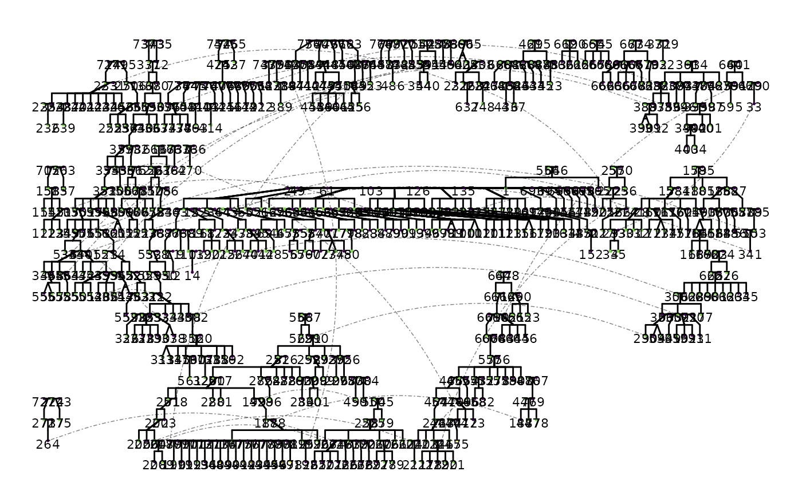

A structured dataset of fictional characters derived from the Song of Ice and Fire universe by George R. R. Martin. The character relationships were partially based on a GEDCOM file publicly posted in the [Westeros.org forum](https://asoiaf.westeros.org/index.php?/topic/88863-all-the-family-trees/), and were updated based on publicly available summaries from [A Wiki of Ice and Fire](https://awoiaf.westeros.org/index.php/Main_Page). This dataset was created for educational and illustrative purposes, such as demonstrating pedigree construction, relationship tracing, and algorithmic logic in family-based data. It includes no narrative content or protected expression from the original works. No rights to the characters, names, or intellectual property of George R. R. Martin or HBO are claimed, and the dataset is not intended to represent any real individuals or families.
Usage
data(ASOIAF)Details
The variables are as follows:
id: Person identification variablefamID: Family identification variablemomID: ID of the motherdadID: ID of the fathername: Name of the personsex: Biological sex (M/F)url: URL to a wiki page about the charactertwinID: ID of the twin, if applicablezygosity: Zygosity of the twin, if applicable. mz is monozygotic; dz is dizygotic
Examples
# Load the ASOIAF dataset
data(ASOIAF)
df_ASOIAF <- ASOIAF[ASOIAF$famID == 26,] # Subset to House Tarth
# View the structure of the dataset
str(df_ASOIAF)
#> 'data.frame': 6 obs. of 9 variables:
#> $ id : num 654 655 656 657 658 659
#> $ famID : num 26 26 26 26 26 26
#> $ momID : num NA NA 655 655 655 655
#> $ dadID : num NA NA 654 654 654 654
#> $ name : chr "Selwyn Tarth" "Unknown wife of Selwyn Tarth" "Galladon Tarth" "Arianne Tarth" ...
#> $ sex : chr "M" "F" "M" "F" ...
#> $ url : chr "https://awoiaf.westeros.org/index.php/Selwyn_Tarth" "https://awoiaf.westeros.org/index.php/Selwyn_Tarth#Family" "https://awoiaf.westeros.org/index.php/Galladon_Tarth" "https://awoiaf.westeros.org/index.php/Arianne_Tarth" ...
#> $ twinID : num NA NA NA NA NA NA
#> $ zygosity: chr NA NA NA NA ...
# Plot a pedigree for House Tarth
if (requireNamespace("ggplot2", quietly = TRUE)) {
# Create a pedigree plot for House Tarth
ggPedigree(df_ASOIAF,
famID = "famID",
personID = "id",
momID = "momID",
dadID = "dadID",
config = list(
add_phantoms = TRUE,
code_male = "M"
)
)
}
#> REPAIR IN EARLY ALPHA
